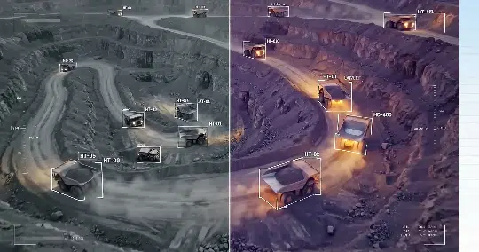
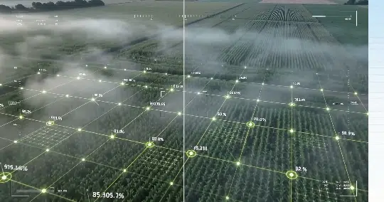

Los riesgos se mueven rápido.
Nosotros los vemos venir.
Plataforma de inteligencia aérea para la brecha nocturna de incendios mediante aeronaves VTOL e inferencia térmica Edge AI a bordo. Detectamos precursores y actividad humana no autorizada antes de la ignición, reduciendo la exposición en terreno y optimizando la respuesta al amanecer.
La brecha nocturna en la protección forestal Fuente: CONAF (2003-2023) Estadística histórica oficial de CONAF: el 99,7% de los incendios forestales en Chile tienen origen en la acción humana (negligencia o intencionalidad).
El 99,7% de los incendios forestales son causados por el ser humano. La aviación tripulada combate de día, pero por seguridad y normativa DGAC no vuela de noche. Cuando el viento y el riesgo son más altos, el cielo queda vacío y las camionetas en tierra tienen visibilidad reducida fuera de los caminos principales.
Centrales de operaciones
Incertidumbre constante. Cuando los satélites reportan calor, el foco ya ha alcanzado escala incontrolable.
Información fragmentadaEmpresas y propietarios
Riesgo permanente de pérdidas patrimoniales catastróficas en madera, biomasa e infraestructura productiva.
Daño patrimonial críticoBrigadistas en terreno
Exposición extrema a emboscadas, cortes de camino o accidentes al ingresar de noche a ciegas por caminos de ripio, con menos del 12% de visibilidad efectiva fuera de la huella.
Riesgo vital innecesarioLos satélites sufren retrasos de órbita, las torres fijas tienen puntos ciegos tras los cerros y quebradas, y las patrullas en camioneta solo ven lo que alcanzan sus focos en el camino. Al atardecer, los aviones cisterna quedan en tierra por seguridad. Athene cambia esta realidad: patrulla el cielo nocturno y detecta la presencia humana antes de que se inicie el fuego, protegiendo a las brigadas y cortando la amenaza en su origen.
Por qué las soluciones tradicionales fallan de noche
Análisis técnico comparativo entre satélites de órbita baja, torres térmicas fijas, vigilancia tripulada convencional y la plataforma autónoma Athene.
| Dimensión operativa | Satélites LEO FIRMS / OroraTech |
Torres térmicas fijas Mástiles ópticos |
Vigilancia tripulada Avionetas diurnas + cuadrillas/drones |
Nuestra propuesta
Strig Systems
Athene (plataforma VTOL + Edge AI) |
|---|---|---|---|---|
| Patrullaje nocturno continuo | Ventana ciega (1–4 h): Pasos orbitales no continuos. Estándar macrocontinental de día, sin cobertura continua durante los turnos nocturnos en faena. |
Continua pero estática: Limitada a línea visual directa. Alta confiabilidad 24/7, pero limitada a la línea de vista directa (LOS) desde la torre, vulnerable a puntos ciegos tras quebradas y cerros. |
Sin vuelo nocturno: Aeronaves en tierra por norma VFR. Aeronaves tripuladas impedidas de operar de noche por DGAC. Camionetas con fatiga y <12% de cobertura. |
Patrullaje aéreo activo: Vuelo nocturno en predio piloto. Operación táctica programada con operador calificado en terreno (VLOS) bajo normativa DGAC. |
| Latencia de detección y alerta | 30 a 90 min: Descarga y cola de procesamiento orbital. Tiempo acumulado entre paso del satélite, procesamiento en servidor en la nube y distribución a centrales. |
Instantánea pero manual: Depende de operador 24/7 en pantalla. Detección óptica directa que requiere personal dedicado para verificar en video y filtrar falsas alarmas. |
Local en terreno: Sin retransmisión rápida si no hay 4G/5G. Alerta inmediata solo para la cuadrilla en sitio; demorada a central en quebradas sin cobertura celular. |
Inferida en segundos: Alerta a estación en ≤ 3 min. Edge AI clasifica a bordo en microsegundos. Despacho de ficha sintética a la estación en ≤ 3 min desde la detección en vuelo. |
| Detección de precursores (humanos / vehículos) | Sin resolución: Píxeles de 375 m a 1 km. Diseñado para frentes de fuego activos masivos, incapaz de ver personas, fogatas tempranas o vehículos. |
Ángulo rasante: Bloqueada por copas de árboles y relieve. Ineficaz en senderos bajo dosel arbóreo denso o quebradas fuera del ángulo de inclinación del mástil. |
Muy limitada: Camionetas restringidas a caminos. Aeronaves no vuelan de noche; patrullas en camioneta solo vigilan caminos principales, dejando el interior a oscuras. |
Detección óptica/térmica: Siluetas y calor desde 100 m. Identifica anomalías térmicas y siluetas humanas en claros y senderos para autorizar disuasión antes del fuego. |
| Puntos ciegos topográficos | Bloqueo atmosférico: Ciegas ante nubosidad o humo. Afectado severamente por nubosidad baja, humo denso e inversión térmica que absorben la radiación infrarroja. |
Puntos ciegos críticos: Invisibilidad tras cerros y laderas. Sombra topográfica física insalvable tras filos, quebradas profundas y laderas opuestas. |
Relieve adverso: Sin visión de fondo de quebrada. Cuadrillas en camioneta sin línea visual en quebradas profundas; aeronaves diurnas afectadas por humo rasante. |
Perspectiva cenital: Vuelo superior que elimina sombras. Patrullaje aéreo con vista cenital sobre laderas, quebradas y caminos forestales, eliminando los puntos ciegos que ocultan las torres fijas y brigadas terrestres. |
| Riesgo humano y supervisión | Cero exposición directa: Operación orbital remota. Vigilancia desde el espacio sin riesgo físico para personal en terreno. |
Baja exposición: Riesgo acotado a accesos y cumbres. Operación remota desde central; riesgo limitado al mantenimiento en cumbres aisladas de difícil acceso. |
Alto riesgo en terreno: Brigadas nocturnas expuestas. 1 piloto + 1 observador por dron convencional; brigadistas en 4x4 expuestos de noche en rutas forestales aisladas. |
Supervisión en tierra (HITL): Operador en base segura. Control y autorización de disuasión desde consola protegida, sin brigadistas expuestos en zonas de riesgo. |
| Modelo operativo y acceso | SaaS macro: Suscripción de datos globales. Suscripción de datos satelitales; útil para análisis macrocontinental, pero no sustituye la vigilancia y respuesta táctica directa en terreno. |
Alto CAPEX: Inversión intensiva en infraestructura fija. Alto costo inicial por torre instalada (mástil estructural, óptica militar, respaldo solar y caminos de acceso). |
Alto costo operativo: Horas de vuelo caras y baja cobertura. Costo elevado por hora de vuelo diurno y patrullas terrestres nocturnas de baja cobertura (<12%). |
Servicio táctico llave en mano: Cero carga operativa y máxima disponibilidad. Modelo por servicio: vigilancia nocturna lista para operar, mantenimiento aeronáutico preventivo, disponibilidad de vuelo garantizada y actualización continua de sensores e IA sin inmovilizar capital ni cargar a sus equipos. |
Vigilancia territorial con inteligencia a bordo
Arquitectura de alta disponibilidad. La aeronave procesa, clasifica y georreferencia en el borde sin requerir enlace continuo a internet ni servidores en la nube.
Plataforma VTOL y navegación táctica
Aeronave híbrida con despegue vertical sin pista y crucero horizontal de ala fija. Diseñada para cubrir radios de hasta 15 km con 45–60 min de autonomía y navegación determinista bajo geocerca.

Carga útil optrónica e inferencia a bordo
Cámara biespectral con estabilización activa en 3 ejes, sensor térmico radiométrico LWIR y óptica 4K. La inferencia local procesa a bordo en microsegundos sin requerir internet ni servidores en la nube.
Comunicaciones tácticas para zonas oscuras
Arquitectura de enlace dual para operar en quebradas y faenas forestales sin cobertura celular ni internet móvil, asegurando la entrega ininterrumpida de telemetría y alertas críticas.
Centro de mando C2 y cadena de evidencia
Consola táctica para supervisión humana continua, triaje de alertas y generación de Reportes Digitales con valor probatorio pericial, estampa de tiempo y anonimización de privacidad.

Cómo se cierra el circuito táctico en zonas sin señal celular
Gran parte de los predios forestales y cordilleranos son zonas de baja cobertura. Athene opera con radioenlaces tácticos locales entre la aeronave y la estación en tierra.
Estación de operador (terreno)
Recepción táctica de alertas y telemetría en tiempo real. El operador evalúa y autoriza la activación del foco disuasivo y sirena desde una posición segura.
Supervisión humana (HITL)Aeronave VTOL (nodo aéreo)
Inferencia térmica Edge AI a bordo con NVIDIA Jetson. Detecta precursores y presencia humana, emite alertas a la estación en tierra y ejecuta retorno de emergencia ante pérdida de enlace.
Edge AI a bordoCentral de despacho y coordinación del partner
Recepción de fichas de alerta georreferenciadas y logs de misión para coordinación de brigadas y auditoría (integración GIS / Webhook).
Integración operacionalEstado del proyecto y próximos hitos
Desarrollo riguroso por etapas verificables. Diferenciamos lo que está resuelto hoy, los ensayos en marcha y los objetivos de escalamiento industrial.
Diseño de sistema y prototipo en análisis
Requisitos de ingeniería, arquitectura de sistemas y plan de pruebas definidos. Validación de concepto analítico y selección de componentes críticos.
Plataforma multirrotor y demo técnica
Integración de aviónica, sensores y Edge AI en una plataforma multirrotor adaptada para la primera demostración técnica funcional y validación de procesamiento en terreno (diciembre 2026 – enero 2027).
Validación human-in-the-loop (HITL)
Pruebas en entorno simulado de la interfaz de operador táctico, protocolo de autorización de foco/sirena y cadena de decisión en tiempo real.
Validación técnica y operacional en terreno
Campaña de vuelos diurnos y nocturnos con aeronave comercial VTOL adaptada desplegada desde bases de brigadas o pistas forestales existentes (recambio rápido de baterías en tierra), validando patrullaje en predio privado (VLOS), detección térmica e integración operacional antes de escalar a estaciones automatizadas.
Noctua VTOL, Nest automatizado y BVLOS
Integración o diseño de la aeronave VTOL Noctua, estación Nest de aterrizaje y carga automatizada, supervisión de flota 1:N (un operador para múltiples aeronaves en simultáneo), enlaces de respaldo y radio de 15 km bajo certificación BVLOS.
Programa de validación conjunta 2026-27
Estructurado en 4 fases metodológicas para empresas forestales, mineras e instituciones que buscan co-diseñar y verificar en terreno la efectividad de la vigilancia nocturna.
Levantamiento territorial y coordinación
Definición de predios prioritarios, levantamiento de zonas ciegas y coordinación con equipos de protección patrimonial y despacho.
Calibración sensorial en terreno
Validación de firmas térmicas en condiciones reales, comprobación de radioenlace off-grid y calibración de umbrales radiométricos.
Ensayos nocturnos y patrullaje activo
Vuelos programados en la brecha nocturna con transmisión táctica local e integración asistida con el operador en tierra.
Auditoría y retorno operativo conjunto
Evaluación conjunta de tiempos de respuesta, falsas alarmas filtradas, horas de vuelo ahorradas e integración con la central del cliente.
Valor operacional en la brecha crítica
Enfoque cualitativo centrado en la reducción del riesgo humano y el daño territorial, sin promesas comerciales arbitrarias en fase de prototipo.
Seguridad nocturna y menor exposición innecesaria
Evita el desplazamiento a ciegas de brigadistas y cuadrillas terrestres en camionetas 4x4 por caminos forestales y quebradas aisladas durante la noche. El reconocimiento aéreo confirma o descarta la amenaza antes de movilizar personal.
Detección previa y disuasión autorizada
Detección óptica y térmica de actividad humana no autorizada visible desde 100 m de altura. Ante una anomalía, el operador humano en tierra puede autorizar la activación del foco destellante de alta intensidad y la sirena acústica para disuadir antes de la ignición.
Optimización del ataque aéreo al amanecer
Al georreferenciar y contener focos o fogatas tempranas en plena noche, se entrega a las centrales de despacho información precisa de coordenadas y perímetro, evitando horas críticas de vuelo de aviones y helicópteros cisterna al inicio del día.
Adaptación de plataforma y principios del servicio (IaaS)
Trabajamos de forma colaborativa para calibrar sensores, adaptar la aeronave a las variables críticas de cada faena y operar sin compra de flotas ni pasivos de capital.
Sin compra de flota aérea ni pasivo operacional
Sin adquisición de drones ni depreciación de activos. El acceso al servicio se contrata como gasto operacional (OPEX) por temporada o campaña de vigilancia nocturna.
Adaptación de carga útil y calibración continua
Configuramos sensores y algoritmos térmicos según las variables críticas de su predio o faena. Strig Systems asume el mantenimiento, reposición de baterías y actualización de software a bordo.
Seguridad operacional y marco normativo
Vuelos ejecutados bajo estándares estrictos de seguridad operacional conforme a normativa DGAC DAN 151 / DAN 91 para vuelos de prueba y validación segregada en predio privado.
Convocatoria de validación 2026-27
Cupos limitados por temporada en la Macrozona Centro-Sur para empresas forestales e industriales que deseen co-diseñar y evaluar la factibilidad en terreno.
Criterios técnicos, operacionales y límites del sistema
Límites operacionales actuales, condiciones de vuelo y respuestas claras para equipos técnicos y gerencias de protección.
La banda infrarroja LWIR (8–14 µm) penetra humo óptico no ionizado y partículas en suspensión que bloquean por completo las cámaras visuales. Sin embargo, no lo resuelve todo: en presencia de niebla densa (dispersión Mie por gotas de agua) o condiciones meteorológicas que reduzcan la visibilidad mínima requerida bajo reglas VLOS, la operación de vuelo se suspende por estrictos protocolos de seguridad operacional.
La plataforma de validación actual está diseñada para operar con seguridad en vientos sostenidos de hasta 10 m/s (~36 km/h). Si las condiciones locales de ráfaga superan este umbral, el sistema activa automáticamente protocolos de descenso o aborto de misión hacia la zona de aterrizaje segura.
El pipeline de Edge AI integra algoritmos de discriminación multi-frame y umbrales radiométricos de gradiente térmico (meta de diseño < 5% falsas alarmas; criterio de aceptación de MVP < 10%). Además, la plataforma opera bajo supervisión humana (Human-in-the-Loop): toda alerta emitida a la estación en tierra debe ser revisada visualmente por el operador antes de activar medidas de disuasión o despacho.
Durante el Programa de Validación 2026-27, todos los vuelos son ejecutados y supervisados en terreno por personal calificado de Strig Systems bajo certificación y normativa aeronáutica chilena (DAN 151 / DAN 91). El cliente o partner territorial no requiere pilotos propios ni asume responsabilidad técnica sobre la aeronave.
Con total transparencia: hoy el sistema no opera vuelos más allá de la línea de vista visual (BVLOS), no cuenta con estación de acople automatizada no asistida, ni ofrece un radio de 15 km de servicio comercial. Actualmente nos encontramos en TRL 3 realizando ensayos controlados en predio piloto privado en rango acotado bajo reglas de línea de vista visual (VLOS). Dichas capacidades forman parte de la visión y hoja de ruta futura.
En la fase actual de validación y despliegue temprano, no dependemos de costosas estaciones robóticas off-grid no probadas. Operamos de forma pragmática aprovechando la infraestructura existente de las empresas e instituciones: bases de brigadas terrestres, helipistas o pistas de aviación tripulada que ya cuentan con energía y perímetro seguro. El equipo en tierra realiza recambios rápidos de baterías (hot-swap) entre misiones consecutivas. A futuro, este aprendizaje en terreno guiará el diseño e instalación de las estaciones de acople y recarga autónoma (Nest).
I+D aplicada y alianzas estratégicas
Combinamos ingeniería aeroespacial rigurosa con validación en el mercado real, respaldados por las instituciones líderes en innovación y transferencia tecnológica.
Inversionistas y fondos deep tech
Apertura a conversaciones con fondos de capital de riesgo enfocados en robótica aérea, dual-use, mitigación climática y tecnologías de defensa territorial.
Centros de investigación y academia
Cooperación técnica en visión computacional nocturna, algoritmos de detección en humo denso y modelos aerodinámicos de alta eficiencia.
Agencias públicas y municipalidades
Modelos de colaboración B2G para protección de comunidades en la interfaz urbano-forestal y optimización de presupuestos de emergencia.
Ingeniería aeroespacial y operaciones tácticas
5 ingenieros civiles aeroespaciales de la Universidad de Concepción, combinando diseño aeronáutico, visión computacional, combate de incendios en primera línea y certificación aeronáutica.
Tomás Medina
CEO & Co-founderIngeniero Civil Aeroespacial • Visión Computacional, Machine Learning y CAD/CAM.
Carlos Gutiérrez
Co-founderBombero Operativo • Ingeniero Civil Aeroespacial. Análisis CFD, logística operacional y arquitectura de interfaz táctica.
Ananda Glaria
Co-founderIngeniera Civil Aeroespacial • Integración y ensayos de vuelo RPAS, CAD, análisis estructural (FEA) y CFD.
Richard Solís
Co-founderIngeniero Civil Aeroespacial • Ingeniería de sistemas, aseguramiento normativo, control de calidad y certificación aeronáutica.
Pablo Alarcón
Co-founderIngeniero Civil Aeroespacial • Arquitectura de sistemas, lógica e integración de flujo de datos, validación y verificación.
Dr. Alejandro López T.
Senior AdvisorPhD Space Systems Engineering and Management. Asesor senior en arquitectura de sistemas espaciales y escalamiento aeroespacial.
Coordinemos una evaluación territorial
Si representas a una empresa con activos territoriales de alto valor, un consorcio de respuesta a emergencias o un fondo de inversión, nuestro equipo técnico responderá directamente tu requerimiento.